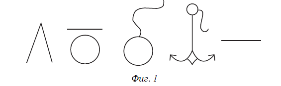
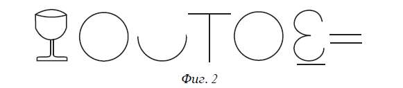

Беседа 964 от 3877 · Беинса Дуно
Страдание, търпение, опитност, знание
Шестнадесета лекция
28 февруари 1926 г.
Верен, истинен, чист и благ всякога бъди!
Размишление
Чете се резюме от свободната тема. Чете се темата „Метод за правилно мислене“.
За следния път всеки от вас да напише по една дума – съществително, прилагателно, глагол, каквато пожелае, и пред нея да постави едно число. След това ще наредим думите според числата, които са пред тях, като започнем от единицата, да видим какво може да излезе от тези думи и числа.
Кой е най-важният въпрос сега за вас? Колко е часът сега?
Отговор: Осем.
Коя планета оказва влияние след осем часа? Какво разбирате от знаците, които виждате на дъската? Какво означава ъгълът?
Отговор: Всеки ъгъл означава пространство, ограничено от два лъча, които излизат от една обща точка.
Колко градуса е този ъгъл?
Отговор: Около 30 градуса.
Отде излиза този ъгъл?
Отговор: От центъра на кръга.
Всеки ъгъл се разглежда като централен ъгъл, който се самоопределя. Тъй поставен ъгълът, той представлява буквата Л, начална буква на думата любов. Като сила Любовта заема известно пространство и действа върху телата като топлинна енергия. Чертичката над кръгчето представлява почва, в която Себе-то се посажда. Самото кръгче е посаденото Себе. Знакът б представлява посоката, по която трябва семето да расте. Последният знак представлява разпукване на Себе-то. Следователно знаците, представени на фиг. 1, не са нищо друго освен буквите в думата любов.

Всяка дума съдържа известна сила в себе си, която трябва да се използва. Можете ли да се ползвате от силите, от соковете, които думите съдържат в себе си, вие сте разбрали техния смисъл. Ако някоя дума е обезсоляла, заместете я с друга. Днес думата любов се е толкова обезсолила, че вместо да повдига хората, тя ги кара да се срамуват от нея. Щом е така, нека я заместят с друга някоя, която не е изгубила още солта си. Например заместете думата любов с думите благост, обич. Напишете думите обич, живот, знание. Произнесете ги няколко пъти и вижте какво влияние ще окажат върху вас. Когато някой изучава музика или някаква наука, но нещо не му върви, нека напише думите търпение, разумност, мисъл, правда, работа, труд, постоянство, и като ги изговори няколко пъти, да види коя от тях ще му създаде подтик за работа, коя ще му помогне да преодолее мъчнотиите си.

Всяка дума представлява резултат на нещо. Първоначално думите са били къси, съставени от по един слог. Впоследствие, с развиването на човешките органи, както и на мозъчните центрове, думите са ставали все по-дълги – двусложни, трисложни и т.н. Първобитният човек си е служил със звукове. Колкото повече се е развивал умствено, толкова повече се е обогатявал неговият говор, обогатявала се е неговата реч. Когато мозъкът на човека заболее, той първо изгубва способността да произнася съществителните имена, после – глаголите и прилагателните имена, и най-после – съюзите. Когато започне да оздравява, по същия начин се възстановява способността му да си служи първо със съюзите, после с прилагателните имена, с глаголите, и най-после – със съществителните имена. Това показва, че съюзите са от най-стар произход, а съществителните имена – от най-нов произход.
За да развие своята реч, човек е работил хиляди години върху себе си, постоянствал е, правил е ред усилия. Мнозина си служат с думата постоянство, без да разбират нейния дълбок смисъл. Кой човек може да се нарече постоянен? – Постоянен е онзи, който в преследване на някоя своя идея минава спънки, противоречия, несгоди, но върви напред, не се връща. Ако 99 пъти го нахокате за нещо, в правотата на което е убеден, и на стотния път той пак ще дойде при вас да ви говори за същото. Да постоянстваш един-два пъти само за постигане на нещо и после да се откажеш от него – това не е никакво постоянство. Това е опит само за развиване на постоянството. Да постоянстваш в нещо – това значи да го постигнеш. Когато развива постоянството в себе си, човек трябва да го различава от нахалството. Който има постоянство, той е умен човек; нахалният обаче е глупав. При постоянството разумът взема участие, а при нахалството разумът отсъства. Постоянството прави човека съвестен, то го заставя да обмисля всяко нещо, което предприема, и да не бърза. Нахалният човек не е съвестен, той е бърз, всичко иска да постигне изведнъж. За да развие човек постоянство в себе си, Невидимият свят го излага на мъчнотии и страдания. Като страда, като се мъчи, човек започва да мисли, да развива постоянство.
Преди да е страдал, преди да е познал мъчението, човек е нетърпелив, непостоянен. Най-малката болка го плаши. Стомах ли го заболи, глава ли го заболи, той започва да се движи в стаята, да ляга и да става от леглото. Ако болката му не мине скоро, той вика лекари, вика приятелите си и започва да се оплаква. Не, заболеете ли, не бързайте да викате лекар. Приложете един, втори, трети метод, концентрирайте мисълта си към болката и няколко пъти си кажете: „Ще оздравея.“ Някога можете десет пъти само да си кажете, че ще оздравеете, и така ще стане, а някога е необходимо хиляда пъти да си кажете, че ще оздравеете. Колкото пъти и да изговорите тези думи, не се обезсърчавайте. Постоянствайте и ще получите добри резултати. Така можете да лекувате и себе си, и приятелите си. Като ученици дръжте в ума си мисълта: болестите имат възпитателно значение за човека. Болестите каляват човешкия организъм и продължават живота му. Забелязано е, че хора, които в детинството си са боледували, те са калили организма си, направили са го по-издръжлив към болести, към страдания. Който в детинството си, в младините си не е боледувал, нито пък е страдал, още при първата физическа болест или страдание той ще се повали на земята – не може да издържа. В този смисъл страданията са упражнения за каляване на организма както във физическо, така и в психическо отношение. От една страна страданията пречистват организма физически, а от друга – обновяват мисълта на човека. Великите мисли се раждат и узряват само при страдания. Най-хубавите, най-великите произведения на учени, на философи, на поети и писатели са създадени във време на страдания. Те са работили при най-неблагоприятни условия, но чрез постоянство, чрез мисъл и работа всичко са преодолели.
Красивите и великите работи се създават при мъчнотиите на живота. Такъв е законът. Колкото по-големи са мъчнотиите ви, толкова по-големи блага те крият в себе си. Това не значи, че човек сам трябва да си създава мъчнотии. Често човек сам си създава страдания и мъчнотии. – Не, тези страдания са ненужни и трябва да се избягват. Какво представлява търпението и как се придобива то? Страданията раждат търпението. Търпението пък създава условия за опитности. Опитността носи знания. Значи страданието, търпението, опитността и знанието представляват една непрекъсната верига. Някой казва: „Много страдам.“ – Придоби ли търпение? – „Никакво търпение не съм придобил.“ – Щом не си придобил търпение, ти още не познаваш страданието. Това, което наричаш страдание, не е нищо друго, освен промеждутъчни състояния на страданието.
Когато човек припадне, той изгубва съзнание. Това наричаме прекъсване на съзнанието. Всяко прекъсване на съзнанието поставя човека в ненормални състояния. Такова нещо представляват и промеждутъчните страдания. За да не се прекъсва съзнанието му, човек трябва да учи, да работи върху себе си. Често страхът, уплахата стават причина за прекъсване на съзнанието. Прекъсване на съзнанието става всякога, когато двойникът напуща тялото. За да се върне двойникът в тялото, трябва да се направят няколко паси по гръбначния стълб на човека. Заспиването на човека е пак прекъсване на съзнанието, което се дължи на друга причина – на пирамидалните клетки в мозъка. Когато човек е бодър, отпочинал, пирамидалните клетки в мозъка са в нормално положение: една до друга, допрени с крачката си. Щом се натрупа много млечна киселина в мозъка, пирамидалните клетки изгубват първото си положение, вследствие на което човек изпитва умора, сънливост и заспива. За да не изпада в такова състояние, човек трябва да държи съзнанието си будно, за да контролира клетките на мозъка. Не може ли да контролира клетките на цялото си тяло, човек заболява, става ленив, своенравен.
Много болести се дължат именно на индивидуализирането на някои от клетките на човешкия организъм. Следователно, когато клетките на човешкия организъм решат да живеят самостоятелно, далече от живота на цялото, те се групират в известни области на организма, дето образуват свое собствено тяло. Тези израстъци в организма на човека са наречени от учените тумори. Те живеят за сметка на целия организъм и се хранят от неговите сокове. Ако чрез силата на мисълта тези новосъздадени клетки могат да се убедят, че мястото им не е в човешкия организъм, те постепенно ще почнат да намаляват, докато съвършено изчезнат. Прилагайте мисълта си при лекуването. Лекувайте себе си, лекувайте и своите ближни. Мисълта е сила, която трябва да се впрегне на работа. От мисълта на човека зависи по-лесно или по-мъчно ще може да излекува някой болен. Лесно или мъчно, това не е важно. Важно е, че всички хора имат условия да прилагат мисълта си, да работят с нея. Двама души, вярващи, с убеждения, отишли да лекуват един свой приятел, който страдал от силно главоболие. Те искали да впрегнат мисълта си на работа и по този начин да му помогнат. Какво излезло накрая? И двамата се върнали болни: единият се върнал с болки във врата, а другият – с болки в гръбнака. Това показва, че болният имал по-силна мисъл от тяхната и повлиял и на двамата. Те приели неговото болезнено състояние и се върнали у дома си болни. Ето защо, когато лекува някого, човек трябва да държи съзнанието си будно, да има положителна мисъл и да не се страхува, че може да заболее, да приеме състоянието на болния. Който лекува болни, той все ще почувства състоянието на болния, но това е само отражение на неговата болест, а не истинско заболяване. Има органически болести в живота, но много от болестите на хората са дошли по пътя на внушението. Като знае това, човек трябва да провери откъде е дошла болестта му и като разбере, че е чужда, пак по закона на внушението да се освободи от нея. По пътя на внушението идат не само болести, но и мрачни, отрицателни мисли и чувства, съмнения, обезсърчавания. Ученикът трябва да има будно съзнание, да следи мислите и чувствата си, за да знае отде идат, и чуждите да туря настрана, а със своите да работи.
Сега да се върнем към търпението, страданието, опитността и знанието. Страданията създават търпението. Търпението е преходен стадий за придобиване на опитности. Опитностите са условия за придобиване на знания, а знанието е необходимо за живота. Страданията представляват неорганизиран свят. Търпението пък представлява резултат от обработването на неорганизираната материя и от изпичането Ă в приготвената вече пещ. Като изучавате явленията в живота и Природата, забелязвате едно повторение. Ако едно явление е станало пред 22 години, след 22 години ще се повтори същото – това е законът за периодичност на явленията. Например, ако животът на някой човек започва добре, постепенно той върви все по-добре, докато дойде до най-високата точка – най-добре. След това настава слизане, което започва със страдания – зле, по-зле и най-зле. Щом дойде до най-ниската точка на страданията, пак започва изкачване – добре, по-добре, най-добре. Разумният човек минава тези периоди без сътресения, в пълна хармония. Тъй щото, ако преди 22 години някой човек е завързал приятелство с един добър човек, след 22 години ще се запознае и ще стане приятел с друг добър човек. Ако преди 22 години е преживял някаква голяма неприятност, след 22 години ще преживее друга, подобна на първата. Това преповтаряне на явленията учените наричат приливи и отливи в Природата.
Сега ще ви дам една малка задача. Нека всеки от вас си обещае да пише поне по едно писмо в месеца до братята и сестрите от Специалния клас в провинцията. Те минават тежки състояния, а трябва да се подкрепят. Когато минават мрачни състояния, те се намират в положението на бедни хора, които се нуждаят от помощ. Помогнете на бедните, за да помогнат и на вас.
Верен, истинен, чист и благ всякога бъди!